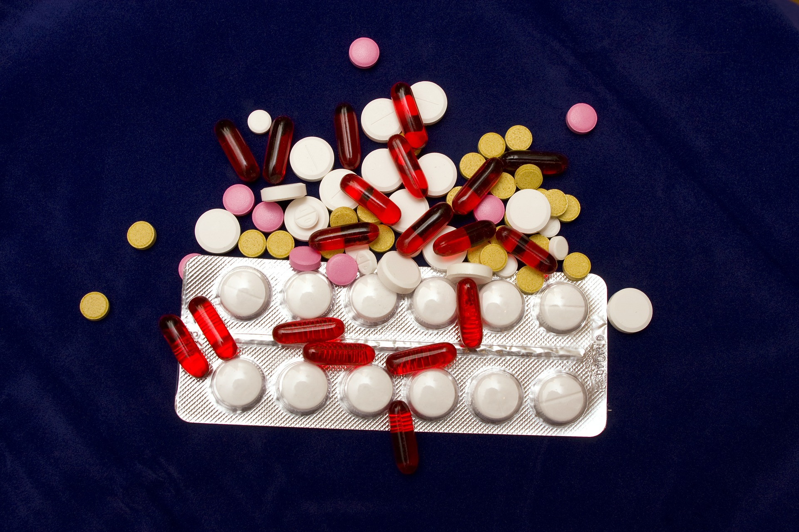
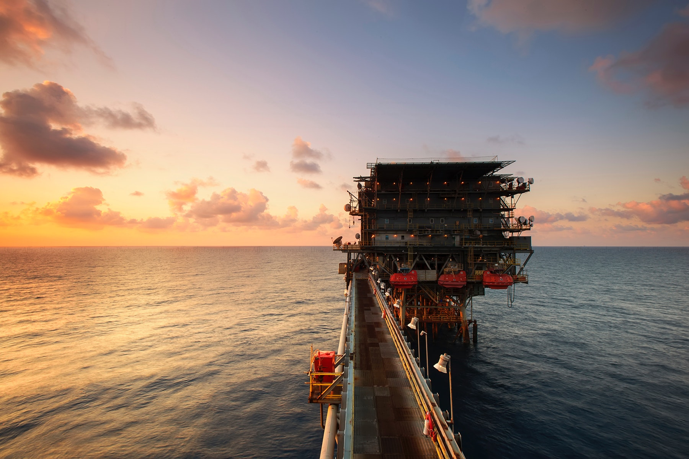
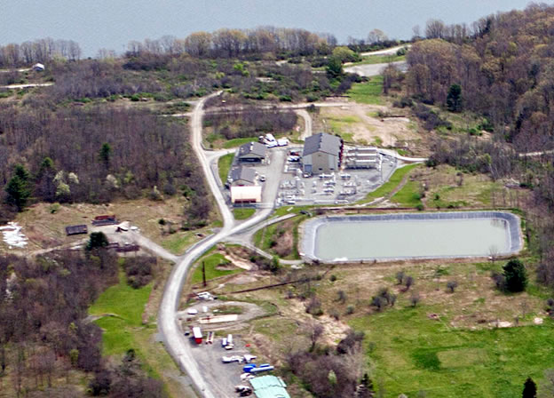
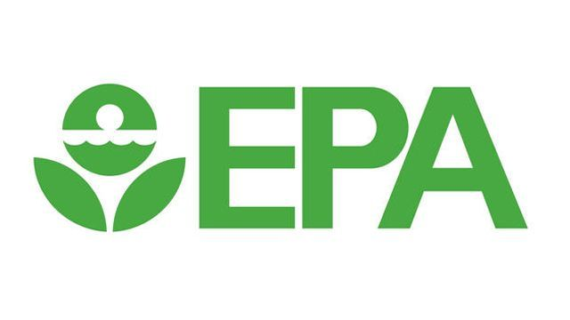

CCE’s primary goal is to empower individual citizens
CCE’s primary goal is to empower individual citizens to have a stronger voice and greater influence in the development and implementation of public policies affecting our water, land, and air in the New York and Connecticut region. In an effort to achieve this goal, the following resources are available to you to help you take action where you live..

Keep Our Water Drug Free
Drugs stored in the household medicine cabinets or disposed of in the trash often end up in the hands of children, teenagers, and potential abusers. The lack of disposal options is also perpetuating the antiquated practice of flushing unused drugs, which is polluting our waters across the state with trace amounts of pharmaceutical drugs. Legislation known as the "Drug Take Back Act" has passed unanimously in both the New York State Senate and Assembly. This would require pharmaceutical manufacturers to fund a comprehensive, statewide take-back program that would provide safe disposal options for all New Yorkers. Email Governor Cuomo to urge him to sign this important bill into law!

Say No to Offshore Drilling
The U.S. Department of the Interior and the Bureau of Ocean Energy Management (BOEM) have proposed to open the Atlantic Region Outer Continental Shelf to leasing, exploration, and development of oil and gas. Allowing offshore drilling anywhere in the Atlantic threatens New York's health, environment, and economy. Now, we need to take action to protect our state from this shortsighted federal proposal.

Prevent LPG Storage In Seneca Lake's Salt Caverns
Crestwood Midstream has proposed a liquefied petroleum gas (LPG) storage facility be constructed in the abandoned salt caverns under Seneca Lake. LPG stored in the salt caverns puts Seneca Lake at risk of gas and brine leaks, explosions, as well as other catastrophic accidents, which would be detrimental to the regions drinking water quality, tourism and wine industry. The NYS DEC must reject Crestwood’s proposed LPG storage facility in order to protect Seneca Lake and the Finger Lakes Region.

Protect Conneticut's Children from Dangerous Pesticides
In order to protect the health of our children, pesticide exposure must be reduced or eliminated wherever possible. I urge Governor Malloy and the CT General Assembly to expand Connecticut’s K-8 pesticide ban to include high school playing fields (grades 9-12), public parks, and town greens.

Stop the attacks on our Environment and Health: Save the EPA!
The President has proposed to slash the EPA budget, eliminate funding for programs to restore the Great Lakes and Long Island Sound, and cut programs to fight climate change. This would decimate EPA's ability to address a broad range of its responsibilities and put our environment, health, and economy at an unacceptable risk! I urge Congress to provide full funding for the EPA and critical programs that it administers, including the Great Lakes Restoration Initiative, Long Island Sound restoration, and efforts to fight climate change.